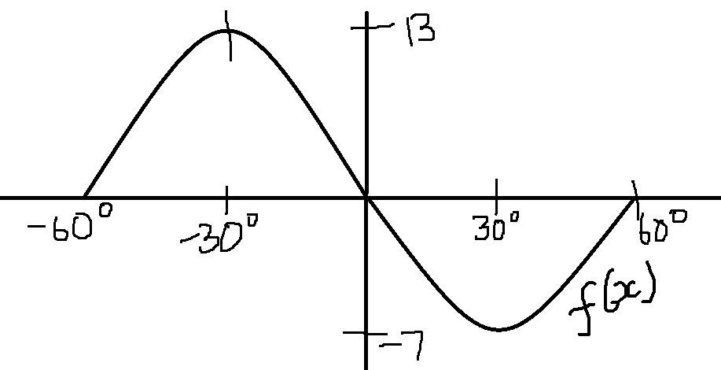

Enter your name
Grade 10 Test 1 Mathematics
Trig functions
Question 1
f(x) = 2cos4(x) - 5
Which one of the following is the correct period of f(x):
1440
90
360
Result[]
Question 2
f(x) = 2cos4(x) - 5
Which one of the following are the correct minimum value and maximum value of f(x):
minimum = - 7 ;maximum = - 3
minimum = - 3 ;maximum = - 7
minimum = - 9 ;maximum = - 3
Result[]
Question 3
g(x) = - 4sin6(x) + 2
Which one of the following is the correct y - intercept of g(x):
(0 ; - 2)
(2 ; 0)
(0 ; 2)
Result[]
Question 4
h(x) = - 2cos5(x) + 1
Which one of the following is the correct amplitude of h(x):
2
- 2
- 3
Result[]
Question 5
g(x) = - 4sin6(x) + 2
Which one of the following is the correct distance between the maximum value and minimum value:
- 6
4
8
Result[]
Question 6

Which one of the following is the correct minimum of f(x):
10
- 7
13
Result[]
Question 7
Which one of the following is the correct amplitude of f(x):
13
10
- 7
Result[]
Question 8
Which one of the following is the correct period of f(x):
30
60
120
Result[]
Question 9
Is the above graph of f(x) increasing or decreasing:
Decreasing
Increasing
None of the above
Result[]
Question 10
h(x)= - 2sin6(x) - 6
Which one of the following are the correct intervals of h(x):
I = 60
I = 360
I = 15
Result[]
Click here to submit all your work
Your marks will be displayed here